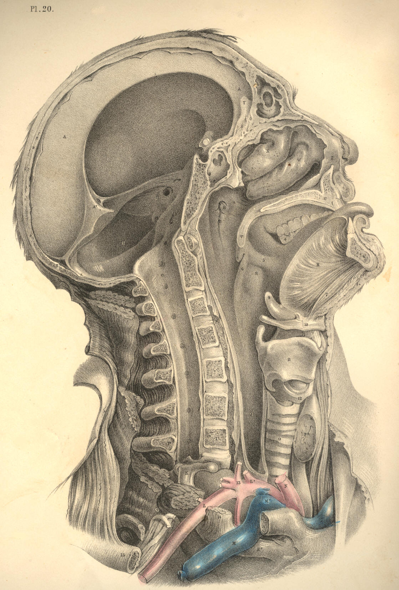
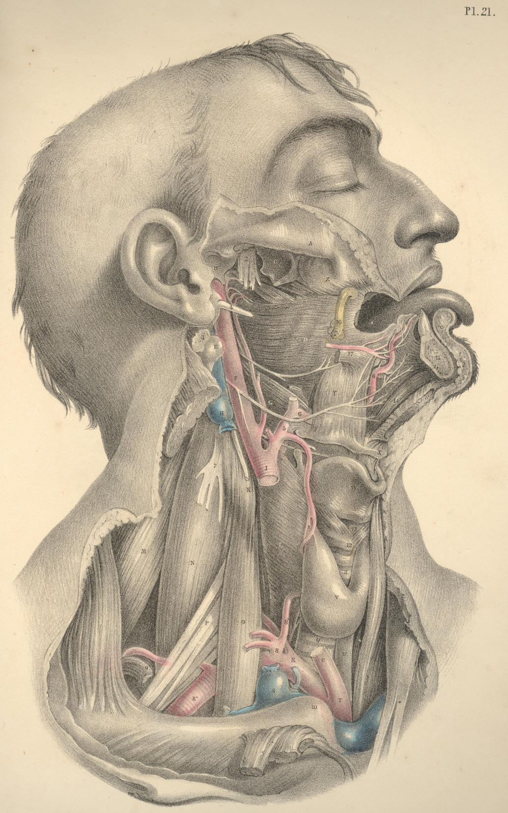

SURGICAL ANATOMY by JOSEPH MACLISE
COMMENTARY ON PLATES 20 & 21.
THE RELATIVE POSITION OF THE CRANIAL,
NASAL, ORAL, AND PHARYNGEAL CAVITIES, &c.
On making a section (vertically through the median line) of the
cranio-facial and cervico-hyoid apparatus, the relation which these
structures bear to each other in the osseous skeleton reminds me
strongly of the great fact enunciated by the philosophical anatomists,
that the facial apparatus manifests in reference to the cranial
structures the same general relations which the hyoid apparatus bears to
the cervical vertebrae, and that these relations are similar to those
which the thoracic apparatus bears to the dorsal vertebrae. To this
anatomical fact I shall not make any further allusions, except in so far
as the acknowledgment of it shall serve to illustrate some points of
surgical import.
The cranial chamber, A A H, Plate 20, is continuous with the spinal
canal C. The osseous envelope of the brain, called calvarium, Z B, holds
serial order with the cervical spinous processes, E I, and these with
the dorsal spinous processes. The dura-matral lining membrane, A A A*,
of the cranial chamber is continuous with the lining membrane, C, of the
spinal canal. The brain is continuous with the spinal cord. The
intervertebral foramina of the cervical spine are manifesting serial
order with the cranial foramina. The nerves which pass through the
spinal region of this series of foramina above and below C are
continuous with the nerves which pass through the cranial region. The
anterior boundary, D I, of the cervical spine is continuous with the
anterior boundary, Y F, of the cranial cavity. And this common serial
order of osseous parts--viz., the bodies of vertebrae, serves to
isolate the cranio-spinal compartment from the facial and cervical
passages. Thus the anterior boundary, Y F D I, of the cranio-spinal
canal is also the posterior boundary of the facial and cervical
cavities.
Now as the cranio-spinal chamber is lined by the common dura-matral
membrane, and contains the common mass of nervous structure, thus
inviting us to fix attention upon this structure as a whole, so we find
that the frontal cavity, Z, the nasal cavity, X W, the oral cavity, 4,
5, S, the pharyngeal and oesophageal passages 8 Q, are lined by the
common mucous membrane, and communicate so freely with each other that
they may be in fact considered as forming a common cavity divided only
by partially formed septa, such as the one, U V, which separates to some
extent the nasal fossa from the oral fossa.
As owing to this continuity of structure, visible between the head and
spine, we may infer the liability which the affections of the one region
have to pass into and implicate the other, so likewise by that
continuity apparent between all compartments of the face, fauces,
oesophagus, and larynx, we may estimate how the pathological condition
of the one region will concern the others.
The cranium, owing to its comparatively superficial and undefended
condition, is liable to fracture. When the cranium is fractured, in
consequence of force applied to its anterior or posterior surfaces, A or
B, Plate 20, the fracture will, for the most part, be confined to the
place whereat the force has been applied, provided the point opposite
has not been driven against some resisting body at the same time. Thus
when the point B is struck by a force sufficient to fracture the bone,
while the point A is not opposed to any resisting body, then B alone
will yield to the force applied; and fracture thus occurring at the
point B, will have happened at the place where the applied force is met
by the force, or weight, or inertia of the head itself. But when B is
struck by any ponderous body, while A is at the same moment forced
against a resisting body, then A is also liable to suffer fracture. If
fracture in one place be attended with counter-fracture in another
place, as at the opposite points A and B, then the fracture occurs from
the force impelling, while the counter-fracture
happens by the force
resisting.
Now in the various motions which the cranium A A B performs upon the top
of the cervical spine C, motions backwards, forwards, and to either
side, it will follow that, taking C as a fixed point, almost all parts
of the cranial periphery will be brought vertical to C in succession,
and therefore whichever point happens at the moment to stand opposite to
C, and has impelling force applied to it, then C becomes the point of
resistance, and thus counter-fractures at the cranial base occur in the
neighbourhood of C. When force is applied to the cranial vertex, whilst
the body is in the erect posture, the top of the cervical spine, E D C,
becomes the point of resistance. Or if the body fall from a height upon
its cranial vertex, then the propelling force will take effect at the
junction of the spine with the cranial base, whilst the resisting force
will be the ground upon which the vertex strikes. In either case the
cranial base, as well as the vertex, will be liable to fracture.
The anatomical form of the cranium is such as to obviate a frequent
liability to fracture. Its rounded shape diffuses, as is the case with
all rotund forms, the force which happens to strike upon it. The mode in
which the cranium is set upon the cervical spine serves also to diffuse
the pressure at the points where the two opposing forces meet--viz., at
the first cervical vertebra E and the cranial basilar process F. This
fact might be proved upon mechanical principle.
The tegumentary envelope of the head, as well as the dura-matral lining,
serves to damp cranial vibration consequent upon concussion; while the
sutural isolation of the several component bones of the cranium also
prevents, in some degree, the extension of fractures and the vibrations
of concussion. The contents of the head, like the contents of all hollow
forms, receive the vibratory influence of force externally applied. The
brain receives the concussion of the force applied to its osseous
envelope; and when this latter happens to be fractured, the danger to
life is not in proportion to the extent of the fracture here, any more
than elsewhere in the skeleton fabric, but is solely in proportion to
the amount of shock or injury sustained by the nervous centre.
When it is required to trephine any part of the cranial envelope, the
points which should be avoided, as being in the neighbourhood of
important bloodvessels, are the following--the occipital protuberance,
B, within which the "torcular Herophili" is situated, and from this
point passing through the median line of the vertex forwards to Z the
frontal sinus, the trephine should not be applied, as this line marks
the locality of the superior longitudinal sinus. The great lateral sinus
is marked by the superior occipital ridge passing from the point B
outwards to the mastoid process. The central point B of the side of the
head, Plate 21, marks the locality of the root of the meningeal artery
within the cranium, and from this point the vessel branches forwards and
backwards over the interior of the cranium.
The nasal fossae are situated on either side of the median partition
formed by the vomer and cartilaginous nasal septum. Both nasal fossae
are open anteriorly and posteriorly; but laterally they do not, in the
normal state of these parts, communicate. The two posterior nares
answering to the two nasal fossae open into the upper part of the bag of
the pharynx at 8, Plate 20, which marks the opening of the Eustachian
tube.
The structures observable in both the nasal fossae absolutely
correspond, and the foramina which open into each correspond likewise.
All structures situated on either side of the median line are similar.
And the structure which occupies the median line is itself double, or
duality fused into symmetrical unity. The osseous nasal septum is
composed of two laminae laid side by side. The spongy bones, X W, are
attached to the outer wall of the nasal fossa, and are situated one
above the other. These bones are three in number, the uppermost is the
smallest. The outer wall of each naris is grooved by three fossae,
called meatuses, and these are situated between the spongy bones. Each
meatus receives one or more openings of various canals and cavities of
the facial apparatus. The sphenoidal sinus near F opens into the upper
meatus. The frontal, Z, and maxillary sinuses open into the middle
meatus, and the nasal duct opens into the inferior sinus beneath the
anterior inferior angle of the lower spongy bone, W.
In the living body the very vascular fleshy and glandular Schneiderian
membrane which lines all parts of the nasal fossa almost completely
fills this cavity. When polypi or other growths occupy the nasal fossae,
they must gain room at the expense of neighbouring parts. The nasal duct
may have a bent probe introduced into it by passing the instrument along
the outer side of the floor of the nasal fossa as far back as the
anterior inferior angle of the lower spongy bone, W, at which locality
the duct opens. An instrument of sufficient length, when introduced into
the nostrils in the same direction, will, if passed backwards through
the posterior nares, reach the opening of the Eustachian tube, 8.
While the jaws are closed, the tongue, R, Plate 20, occupies the oral
cavity almost completely. When the jaws are opened they form a cavity
between them equal in capacity to the degree at which they are sundered
from each other. The back of the pharynx can be seen when the jaws are
widely opened if the tongue be depressed, as R, Plate 20. The hard
palate, U, which forms the roof of the mouth, is extended further
backwards by the soft palate, V, which hangs as the loose velum of the
throat between the nasal fossae above and the fauces below. Between the
velum palati, V, and the root of the tongue, we may readily discern,
when the jaws are open, two ridges of arching form, 5, 6, on either side
of the fauces. These prominent arches and their fellows are named the
pillars of the fauces. The anterior pillar, 5, is formed by the
submucous palato-glossus muscle; the posterior pillar, 6, is formed by
the palato-pharyngeus muscle. Between these pillars, 5 and 6, is
situated the tonsil, S, beneath the mucous membrane. When the tonsils of
opposite sides become inflamed and suppurate, an incision may be made
into either gland without much chance of wounding the internal carotid
artery; for, in fact, this vessel lies somewhat removed from it behind.
In Plate 21, that point of the superior constrictor of the pharynx,
marked D, indicates the situation of the tonsil gland; and a
considerable interval will be seen to exist between D and the internal
carotid vessel F.
If the head be thrown backwards the nasal and oral cavities will look
almost vertically towards the pharyngeal pouch. When the juggler is
about to "swallow the sword," he throws the head back so as to bring the
mouth and fauces in a straight line with the pharynx and oesophagus. And
when the surgeon passes the probang or other instruments into the
oesophagus, he finds it necessary to give the head of the person on whom
he operates the same inclination backwards. When instruments are being
passed into the oesophagus through the nasal fossa, they are not so
likely to encounter the rima glottidis below the epiglottis, 9, as when
they are being passed into the oesophagus by the mouth. The glottis may
be always avoided by keeping the point of the instrument pressing
against the back of the pharynx during its passage downwards.
When in suspended animation we endeavour to inflate the lungs through
the nose or mouth, we should press the larynx, 10, 11,12, backwards
against the vertebral column, so as to close the oesophageal tube.
DESCRIPTION OF PLATES 20 & 21.
PLATE 20.
A A. The dura-matral falx; A*, its attachment to the tentorium.
B. Torcular Herophili.
C. Dura-mater lining the spinal canal.
D D*. Axis vertebra.
E E*. Atlas vertebra.
F F*. Basilar processes of the sphenoid and occipital bones.
G. Petrous part of the temporal bone.
H. Cerebellar fossa.
I I*. Seventh cervical vertebra.
K K*. First rib surrounding the upper part of the pleural sac.
L L*. Subclavian artery of the right side overlying the pleural sac.
M M*. Right subclavian vein.
N. Right common carotid artery cut at its origin.
O. Trachea.
P. Thyroid body.
Q. Oesophagus.
R. Genio-hyo-glossus muscle.
S. Left tonsil beneath the mucous membrane.
T. Section of the lower maxilla.
U. Section of the upper maxilla.
V. Velum palati in section.
W. Inferior spongy bone.
X. Middle spongy bone.
Y. Crista galli of oethmoid bone.
Z. Frontal sinus.
2. Anterior cartilaginous part of nasal septum.
3. Nasal bone.
4. Last molar tooth of the left side of lower jaw.
5. Anterior pillar of the fauces.
6. Posterior pillar of the fauces.
7. Genio-hyoid muscle.
8. Opening of Eustachian tube.
9. Epiglottis.
10. Hyoid bone.
11. Thyroid bone.
12. Cricoid bone.
13. Thyroid axis.
14. Part of anterior scalenus muscle.
15. Humeral end of the clavicle.
16. Part of posterior scalenus muscle.

Plate 20
PLATE 21.
A. Zygoma.
B. Articular glenoid fossa of temporal bone.
C. External pterygoid process lying on the levator and tensor palati
muscles.
D. Superior constrictor of pharynx.
E. Transverse process of the Atlas.
F. Internal carotid artery. Above the point F, is seen the
glosso-pharyngeal nerve; below F, is seen the hypoglossal
nerve.
G. Middle constrictor of pharynx.
H. Internal jugular vein.
I. Common carotid cut across.
K. Rectus capitis major muscle.
L. Inferior constrictor of pharynx.
M. Levator anguli scapulae muscle.
N. Posterior scalenus muscle.
O. Anterior scalenus muscle.
P. Brachial plexus of nerves.
Q. Trachea.
R R*. Subclavian artery.
S. End of internal jugular vein.
T. Bracheo-cephalic artery.
U U*. Roots of common carotid arteries.
V. Thyroid body.
W. Thyroid cartilage.
X. Hyoid bone.
Y. Hyo-glossus muscle.
Z. Upper maxillary bone.
2. Inferior maxillary branch of fifth cerebral nerve.
3. Digastric muscle cut.
4. Styloid process.
5. External carotid artery.
6 6. Lingual artery.
7. Roots of cervical plexus of nerves.
8. Thyroid axis; 8*, thyroid artery, between which and Q, the trachea,
is seen the inferior laryngeal nerve.
9. Omo-hyoid muscle cut.
10. Sternal end of clavicle.
11. Upper rings of trachea, which may with most safety be divided in
tracheotomy.
12. Cricoid cartilage.
13. Crico-thyroid interval where laryngotomy is performed.
14. Genio-hyoid muscle.
15. Section of lower maxilla.
16. Parotid duct.
17. Lingual attachment of styloglossus muscle, with part of the
gustatory nerve seen above it.

Plate 21
COMMENTARY ON PLATE 22